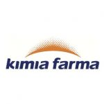
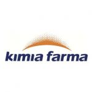
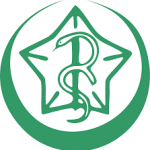
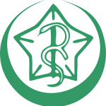

SMK KESEHATAN ANNISA
"Datang Dengan Cinta Pulang Dengan Bangga"
"Datang Dengan Cinta Pulang Dengan Bangga"
Sekolah yang mengutamakan pendidikan berkarakter, berahlak mulia, kompetensi yang unggul, dan juara.
Kepala Sekolah
Program keahlian Yang Dimiliki SMK Kesehatan Annisa


Beberapa point keunggulan dari SMK Kesehatan Annisa :
Kami sekolah yang mengutamakan penumbuhan karakter pribadi & kebangsaan
Kegiatan di SMK Kesehatan Annisa selalu berorientasi pada nilainilai keagamaan
Kemampuan yang diterapkan kepada siswa adalah skill yang sangat dibutuhkan di Dunia Usaha dan Dunia Industri
Kami mendukung seluruh kegiatan di sekolah dengan fasilitas yang sangat memadai
Berikut adalah point-point pertanyaan yang membantu menjawab mengapa harus memilih SMK Kesehatan Annisa
SMK Kesehatan Annisa Terbaik di Kab. Bogor dengan Akreditasi A, Program Keahlian di SMK Kesehatan Annisa adalah keahlian yang sangat dibutuhkan Dunia Usaha dan Dunia Industri saat ini dan masa depan
Tentunya siswa akan dibekali dengan skill dan kemampuan dari Guru dan SDM muda-millenial, kreatif, inovatif, dan berdedikasi tinggi. Selain program Praktek Kerja Lapangan, siswa juga diberikan bekal kemampuan dan portofolio, sehingga siap berkarya setelah lulus
Tentunya sebelum terjun di Dunia Usaha dan Dunia Industri, siswa akan mendapatkan sertifikasi langsung dari LSP (Lembaga Sertifikasi Profesi), dan juga Uji Kompetensi

Dunia Usaha/Industri yang sudah bekerja sama dengan kami :
 

 



Jl. Raya Keranggan Np. 25, Puspasari,
Kec. Citereup, Bogor, Jawa Barat 16810, Tlp. (021) 87916022